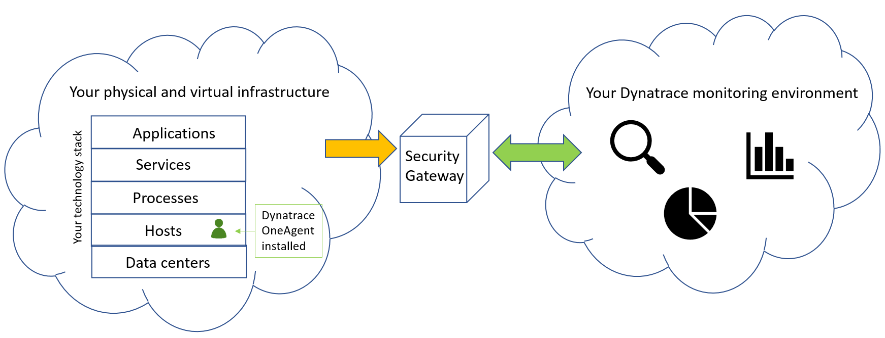
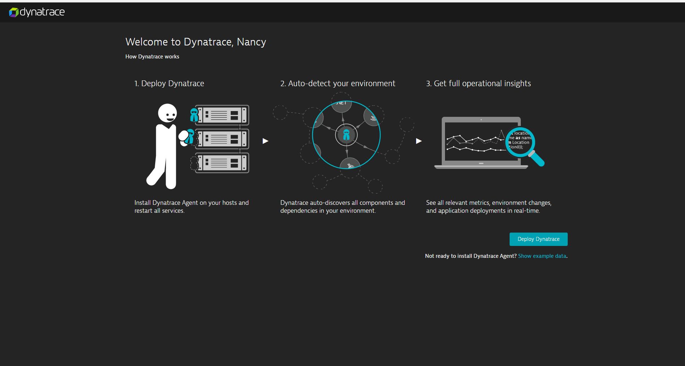
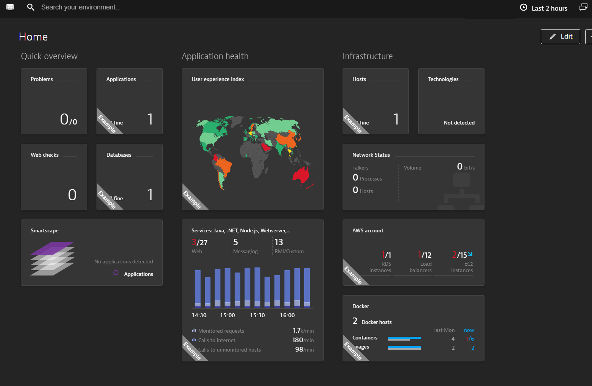
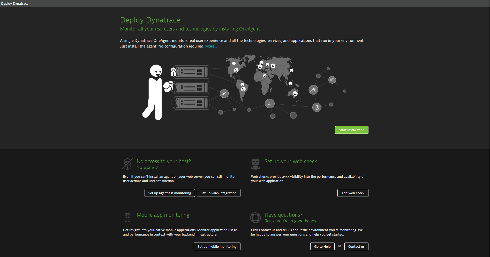

How do I get started?
Hello and welcome!
Your Dynatrace journey begins with OneAgent installation. Dynatrace OneAgent performs all tasks related to the monitoring of your hosts, processes, applications, infrastructure, and real user experience. OneAgent keeps you informed of each aspect of your application’s health and performance, tracking the response times of all service requests and user actions in real time and immediately raising alerts when variations to baseline performance are detected.
To begin, you should understand the basic building blocks of Dynatrace. A single OneAgent can monitor all the technologies, services, and applications that run in your environment. Security Gateway is an optional Dynatrace component that acts as a proxy between OneAgent and Dynatrace Server. Note that if you decide to install Security Gateway, it is recommended that you do it prior to installing OneAgent.

Dynatrace supports numerous environment types and technologies.
Create your Dynatrace account
The first thing you need to do is create a Dynatrace account. To do this, visit the Dynatrace web site and click the Free trial button. You'll be prompted to provide an email address, password, contact information, and your region. You'll then arrive at the page shown below.

Acquaint yourself with Dynatrace
You now have the option of viewing some sample monitoring data to get a preview of Dynatrace before you install OneAgent. To see the basic Dynatrace dashboard, navigation menu, and tiles, click the View example data link (see image above). You can then click any of the example dashboard tiles (tagged with Example labels) to get a preview of how Dynatrace works.

The standard Dynatrace dashboard is what you typically see when you log in to your Dynatrace environment. However, you can easily create your own custom dashboards.
For a short introduction to valuable Dynatrace features, see 4 things you’ll absolutely love about Dynatrace.
Deploy Dynatrace OneAgent
To install OneAgent click the Deploy Dynatrace button and then Start installation. The basic installation steps are simple. However, if you have questions, have a look at how do I install OneAgent?
Other deployment options
Installation of OneAgent is the standard deployment option. However, other deployment options are available at the bottom of the Deploy Dynatrace page.

Set up agentless monitoring
Agentless monitoring is appropriate for environments where you can’t install OneAgent on your web server. If you do have web server access, it's recommended that you install OneAgent instead.
Set up your web check
Web checks are synthetic (i.e., simulated) user visits through which you can monitor the availability as well as the business-critical workflows of your application.
Set up PaaS integration
Dynatrace can monitor your virtualized components within PaaS platforms such as Azure and Cloud Foundry.
Set up mobile monitoring
You can instrument your mobile application to perform real user monitoring.
Access your Dynatrace environment
You can access your Dynatrace environment anytime by going to Dynatrace website and clicking the Login button in the upper-right corner.